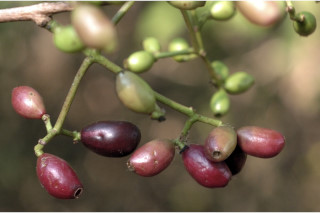
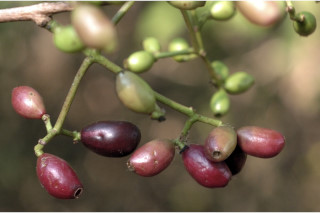

Large trees up to 20 m tall.
20 ಮೀ. ಎತ್ತರದವರೆಗೆ ಬೆಳೆಯುವ ದೊಡ್ಡ ಗಾತ್ರದ ಮರಗಳು.
Large trees up to 20 m tall.
பெரிய மரங்கள் 20 மீ. உயரம் வரை வளரக்கூடியது.
Bark grey or brown, irregularly flaky; blaze brownish.
ತೊಗಟೆ ಬೂದು ಅಥವಾ ಕಂದು ಬಣ್ಣ ಹೊಂದಿದ್ದು ಅನಿಯತವಾಗಿ ಚಕ್ಕೆಯೇಳುತ್ತವೆ;ಕಚ್ಚು ಮಾಡಿದ ಜಾಗ ಕಂದು ಬಣ್ಣದಲ್ಲಿರುತ್ತದೆ
Bark grey or brown, irregularly flaky; blaze brownish.
மரத்தின் பட்டை சாம்பல் நிறமானது அல்லது ப்ரவுன் நிறமானது, ஒழுங்கற்ற செதில்களாக உதிருபவை; உள்பட்டை ப்ரவுன் நிறமானது.
Young branchlets subterete to slightly quadrangular, glabrous.
ಎಳ ಕಿರುಕೊಂಬೆಗಳು ಉಪದುಂಡಾಗಿರುವುದರಿಂದ ಹಿಡಿದು ಕೊಂಚ 4-ಕೋನಗಳನ್ನು ಒಳಗೊಂಡ ಮಾದರಿಯಲ್ಲಿರುತ್ತವೆ ಮತ್ತು ರೋಮರಹಿತವಾಗಿರುತ್ತವೆ.
Young branchlets subterete to slightly quadrangular, glabrous.
சிறியநுனிக்கிளைகள் குறுக்குவெட்டுத் தோற்றத்தில் வளையமானது முதல் சிறிது நான்கு கோணங்களுடையது, உரோமங்களற்றது.
Leaves simple, opposite, decussate; petiole 1-2.5 cm, canaliculate, glabrous; lamina 7-15 x 3-7 cm, variable in shape, elliptic to wide elliptic or narrow ovate - oblong, apex acute to acuminate with blunt tip, base acute to attenuate or rounded, margin entire, coriaceous, pellucid gland dotted (glands sometimes not visible in thick coriaceous leaves); midrib canaliculate; intramarginal nerve present; secondary_nerves close, parallel; tertiary_nerves admedially ramified.
ಎಲೆಗಳು ಸರಳವಾಗಿದ್ದು ಅಭಿಮುಖವಾಗಿ ಜೋಡನೆಗೊಂಡಿದ್ದು ಕಾಂಡದ ಎರಡೂ ಕಡೆ ಎದುರು ಬದರಿನ ಲಂಬ ಸಾಲಿನಲ್ಲಿರುತ್ತವೆ; ತೊಟ್ಟುಗಳು 1 -2.5 ಸೆಂ.ಮೀ. ವರೆಗಿನ ಉದ್ದಹೊಂದಿದ್ದು ಕಾಲುವೆಗೆರೆ ಸಮೇತವಿರುತ್ತವೆ ಮತ್ತುರೋಮರಹಿತವಾಗಿರುತ್ತವೆ;ಪತ್ರಗಳು7 – 15 X 3 – 7 ಸೆಂ.ಮೀ.ವರೆಗಿನ ಗಾತ್ರವಿದ್ದು ಆಕಾರದಲ್ಲಿ ವೈವಿಧ್ಯತೆ ಹೊಂದಿರುತ್ತವೆ, ಅಂಡವೃತ್ತದಿಂದ ಹಿಡಿದು ಅಗಲವಾದ ಅಂಡವೃತ್ತ ಅಥವಾ ಸಂಕುಚಿತ ಅಂಡ- ಚತುರಸ್ರದವರೆಗಿನ ಆಕಾರ ಹೊಂದಿದ್ದು, ಮೊಂಡಾಗ್ರವುಳ್ಳ ಕ್ರಮೇಣ ಚೂಪಾಗುವ ಮಾದರಿಯ ತುದಿ,ಚೂಪಾದುದರಿಂದ ಹಿಡಿದು ಒಳಬಾಗಿದ ಅಥವಾ ದುಂಡಾದ ಮಾದರಿವರೆಗಿನ ಬುಡ,ನಯವಾದ ಅಂಚು,ಪ್ರಕಾಶ ಭೇಧ್ಯ ರಸಗ್ರಂಥಿ ಚುಕ್ಕೆಗಳನ್ನು ಹೊಂದಿದ್ದು (ಕೆಲವು ವೇಳೆ ರಸಗ್ರಂಥಿಗಳು ದಪ್ಪವಾದ ಎಲೆಗಳಲ್ಲಿ ಅಸ್ಪಷ್ಟವಾಗಿರುತ್ತವೆ) ತೊಗಲನ್ನೋಲುವ ಮೇಲ್ಮೈ ಹೊಂದಿರುತ್ತವೆ;ಮಧ್ಯ ನಾಳ ಪತ್ರದ ಮೇಲ್ಭಾಗದಲ್ಲಿ ಕಾಲುವೆಗೆರೆ ಸಮೇತವಿರುತ್ತದೆ; ಅಂಚಿನ ನಾಳಗಳು ಇರುತ್ತವೆ; ಎರಡನೇ ದರ್ಜೆಯ ನಾಳಗಳು ಅನೇಕವಿದ್ದು ಹತ್ತಿರವಾಗಿರುತ್ತವೆ ಹಾಗೂ ಸಮಾಂತರದಲ್ಲಿರುತ್ತವೆ ;ಮೂರನೇ ದರ್ಜೆಯ ನಾಳಗಳು ಎಲೆಯ ಅಕ್ಷದ ಕಡೆಗೆ ಕವಲುಗೊಂಡಿರುತ್ತವೆ.
Leaves simple, opposite, decussate; petiole 1-2.5 cm, canaliculate, glabrous; lamina 7-15 x 3-7 cm, variable in shape, elliptic to wide elliptic or narrow ovate - oblong, apex acute to acuminate with blunt tip, base acute to attenuate or rounded, margin entire, coriaceous, pellucid gland dotted (glands sometimes not visible in thick coriaceous leaves); midrib canaliculate; intramarginal nerve present; secondary_nerves close, parallel; tertiary_nerves admedially ramified.
இலைகள் தனித்தவை, எதிரடுக்கமானவை, குறுக்குமறுக்கானவை; இலைக்காம்பு 1-2.5 செ.மீ., குறுக்குவெட்டுத் தோற்றத்தில் கேனாலிகுலேட், உரோமங்களற்றது; இலை அலகு 7-15 X 3-7 செ.மீ., வெவ்வேறு வடிவுடையது, நீள்வட்ட வடிவானது முதல் அகன்ற நீள்வட்ட வடிவானது அல்லது குறுகிய முட்டை-நீள்சதுர வடிவானது, அலகின் நுனி கூரியது முதல் அதிக்கூரியதுடன் அதன் முனை மழுங்கியது, அலகின் தளம் கூரியது முதல் அட்டனுவேட் அல்லது வட்டமானது, அலகின் விளிம்பு முழுமையானது, கோரியேசியஸ், ஒளிபுகும் சுரப்பி புள்ளிகளுடையது (சிலசமயங்களில் தடித்த கோரியேசியஸ் இலைகளில் ஒளிபுகும் சுரப்பி புள்ளி கண்களுக்கு புலப்படாது); மையநரம்பு மேற்புறத்தில் அலகின் பரப்பைவிட பள்ளமானது; விளிம்பு நரம்பு (இண்ட்ராமார்ஜினல் நரம்பு) கொண்டது; இரண்டாம் நிலை நரம்புகள் நெருக்கமான இணையானவை; மூன்றாம் நிலை நரம்புகள் அட்மீடியல்லி ராமிபைடு.
Inflorescence corymbose panicled cyme, in axills of fallen leaves; flowers white.
ಪುಷ್ಪಮಂಜರಿ ಉದುರಿದ ಎಲೆಗಳ ಅಕ್ಷಾಕಂಕುಳಿಲ್ಲಿದ್ದು , ಪುನರಾವೃತ್ತಿಯಾಗಿ ಕವಲೊಡೆಯುವ ಮಧ್ಯಾರಂಭಿ ನೀಳ ಛತ್ರ ಮಾದರಿಯಲ್ಲಿರುತ್ತವೆ;ಹೂಗಳು ಬಿಳಿ ಬಣ್ಣದಲ್ಲಿರುತ್ತವೆ.
Inflorescence corymbose panicled cyme, in axills of fallen leaves; flowers white.
மஞ்சரி கோரியம்போஸ் பேனிக்கிள் சைம் வகை, இலைகளற்ற முதிர்ந்த கிளைகளில் தோன்றுபவை; மலர்கள் வெள்ளை நிறமானது.
Berry globose or oblong, crowned by persistent calyx, purple, edible; seed one.
ಬೆರ್ರಿ ಫಲಗಳು ಗೋಳಾಕಾರ ಅಥವಾ ಚತುರಸ್ರದ ಆಕಾರದಲ್ಲಿದ್ದು ಮುಕುಟದಲ್ಲಿ ಶಾಶ್ವತವಾಗಿ ಉಳಿಯುವ ಪುಷ್ಪಪಾತ್ರೆಯ ಸಮೇತವಿರುತ್ತವೆ ಮತ್ತು ಕೆನ್ನೀಲಿ ಬಣ್ಣ ಹೊಂದಿದ್ದು ತಿನ್ನಲು ಯೋಗ್ಯವಾಗಿರುತ್ತವೆ;ಬೀಜ ಒಂದು
Berry globose or oblong, crowned by persistent calyx, purple, edible; seed one.
முழுச்சதைகனி (பெர்ரி) கோளவடிவானது அல்லது நீள்சதுர வடிவானது, நிரந்தரமான புல்லி இதழ்களுடையவை, பர்புள் நிறமானது, உண்ணக்கூடியது; ஒரு விதையுள்ள கனி.


 
